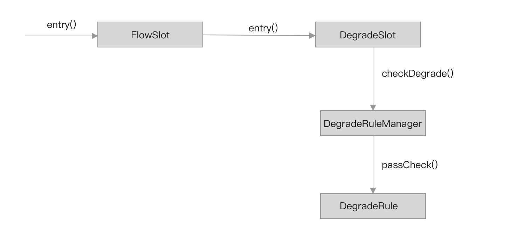

- 01 开篇词：一次服务雪崩问题排查经历.md.html
- 02 为什么需要服务降级以及常见的几种降级方式.md.html
- 03 为什么选择 Sentinel，Sentinel 与 Hystrix 的对比.md.html
- 04 Sentinel 基于滑动窗口的实时指标数据统计.md.html
- 05 Sentinel 的一些概念与核心类介绍.md.html
- 06 Sentinel 中的责任链模式与 Sentinel 的整体工作流程.md.html
- 07 Java SPI 及 SPI 在 Sentinel 中的应用.md.html
- 08 资源指标数据统计的实现全解析（上）.md.html
- 09 资源指标数据统计的实现全解析（下）.md.html
- 10 限流降级与流量效果控制器（上）.md.html
- 11 限流降级与流量效果控制器（中）.md.html
- 12 限流降级与流量效果控制器（下）.md.html
- 13 熔断降级与系统自适应限流.md.html
- 14 黑白名单限流与热点参数限流.md.html
- 15 自定义 ProcessorSlot 实现开关降级.md.html
- 16 Sentinel 动态数据源：规则动态配置.md.html
- 17 Sentinel 主流框架适配.md.html
- 18 Sentinel 集群限流的实现（上）.md.html
- 19 Sentinel 集群限流的实现（下）.md.html
- 20 结束语：Sentinel 对应用的性能影响如何？.md.html
- 21 番外篇：Sentinel 1.8.0 熔断降级新特性解读.md.html
- 捐赠
13 熔断降级与系统自适应限流
熔断降级
限流需要我们根据不同的硬件条件做好压测，压测出一个接口或者一个服务在某种硬件配置下最大能承受的 QPS，根据这个结果配置限流规则，并且在后期需求的不断叠加，也需要对接口重新做压测，或者根据线上的实际表现不断调整限流的阈值。因此，限流可能很少使用，或者限流的阈值都会配置的比压测结果略大，这时就需要结合熔断降级做兜底。
Sentinel 支持对同一个资源配置多个相同类型或不同类型的规则，在配置了限流规则的基础上，我们还可以为同一资源配置熔断降级规则。当接口的 QPS 未达限流阈值却已经有很多请求超时的情况下，就可能达到熔断降级规则的阈值从而触发熔断，这就能很好地保护服务自身。
熔断规则可配置的属性
DegradeRule 规则类声明的字段如下：
public class DegradeRule extends AbstractRule {
// 可配置字段
private double count;
private int timeWindow;
private int grade = RuleConstant.DEGRADE_GRADE_RT;
private int rtSlowRequestAmount = RuleConstant.DEGRADE_DEFAULT_SLOW_REQUEST_AMOUNT;
private int minRequestAmount = RuleConstant.DEGRADE_DEFAULT_MIN_REQUEST_AMOUNT;
// 非配置字段
private AtomicLong passCount = new AtomicLong(0);
private final AtomicBoolean cut = new AtomicBoolean(false);
}
- count：限流阈值。
- timeWindow：重置熔断的窗口时间，默认值 0。
- grade：降级策略，支持 DEGRADE_GRADE_RT（按平均响应耗时）、DEGRADE_GRADE_EXCEPTION_RATIO（按失败比率）和 DEGRADE_GRADE_EXCEPTION_COUNT（失败次数）三种熔断降级策略。
- rtSlowRequestAmount：当 grade 配置为 DEGRADE_GRADE_RT 时，该值表示可触发熔断的超过阈值的慢请求数量。如果该值配置为 5，阈值为 100 毫秒，当连续 5 个请求计算平均耗时都超过 100 毫秒时，后面的请求才会被熔断，下个时间窗口修复。
- minRequestAmount：当 grade 配置为 DEGRADE_GRADE_EXCEPTION_RATIO 时，该值表示可触发熔断的最小请求数，假设阈值配置为 10，第一个请求就失败的情况下，失败率为 100%，minRequestAmount 就是避免出现这种情况的。
- passCount：只在 grade 为 DEGRADE_GRADE_RT 时使用，累加慢请求数，该值由一个定时任务重置，周期为 timeWindow（窗口时间大小）。
- cut：记录当前是否已经触发熔断，当 passCount 的值大于等待 rtSlowRequestAmount 时被设置为 true，由定时任务在 timeWindow 之后重置为 false。
熔断降级判断流程
DegradeSlot 是实现熔断降级的切入点，它作为 ProcessorSlot 插入到 ProcessorSlotChain 链表中，在 entry 方法中调用 Checker 去判断是否熔断当前请求，如果熔断则抛出 Block 异常。
Checker 并不是一个接口，而是一种检测行为，限流的 ckeck 由 FlowRuleChecker 实现，而熔断的 check 行为则由 DegradeRuleManager 负责，真正 check 逻辑判断由 DegradeRule 实现，流程如下图所示。

当 DegradeSlot#entry 方法被调用时，由 DegradeSlot 调用 DegradeRuleManager#checkDegrade 方法检查当前请求是否满足某个熔断降级规则。熔断规则配置由 DegradeRuleManager 加载，所以 DegradeSlot 将 check 逻辑交给 DegradeRuleManager 去完成，checkDegrade 方法的源码如下：
public static void checkDegrade(ResourceWrapper resource, Context context, DefaultNode node, int count)
throws BlockException {
// 因为我们可以对同一个资源配置多个熔断降级规则，所以返回的将是一个集合。
Set<DegradeRule> rules = degradeRules.get(resource.getName());
if (rules == null) {
return;
}
for (DegradeRule rule : rules) {
if (!rule.passCheck(context, node, count)) {
throw new DegradeException(rule.getLimitApp(), rule);
}
}
}
DegradeRuleManager 首先根据资源名称获取配置的熔断降级规则，然后遍历熔断降级规则，调用 DegradeRule#passCheck 方法将检查是否需要触发熔断的逻辑交给 DegradeRule 完成。如果对一个资源配置多个熔断降级规则，那么只要有一个熔断降级规则满足条件，就会触发熔断。
DegradeRule#passCheck 方法源码如下：
@Override
public boolean passCheck(Context context, DefaultNode node, int acquireCount, Object... args) {
if (cut.get()) {
return false;
}
// (1)
ClusterNode clusterNode = ClusterBuilderSlot.getClusterNode(this.getResource());
if (clusterNode == null) {
return true;
}
// (2)
if (grade == RuleConstant.DEGRADE_GRADE_RT) {
double rt = clusterNode.avgRt();
if (rt < this.count) {
passCount.set(0);
return true;
}
if (passCount.incrementAndGet() < rtSlowRequestAmount) {
return true;
}
}
// (3)
else if (grade == RuleConstant.DEGRADE_GRADE_EXCEPTION_RATIO) {
double exception = clusterNode.exceptionQps();
double success = clusterNode.successQps();
double total = clusterNode.totalQps();
if (total < minRequestAmount) {
return true;
}
double realSuccess = success - exception;
if (realSuccess <= 0 && exception < minRequestAmount) {
return true;
}
if (exception / success < count) {
return true;
}
}
// (4)
else if (grade == RuleConstant.DEGRADE_GRADE_EXCEPTION_COUNT) {
double exception = clusterNode.totalException();
if (exception < count) {
return true;
}
}
// (5)
if (cut.compareAndSet(false, true)) {
ResetTask resetTask = new ResetTask(this);
pool.schedule(resetTask, timeWindow, TimeUnit.SECONDS);
}
// 熔断
return false;
}
- 根据资源名称获取该资源全局的指标数据统计 ClusterNode。
- 如果熔断降级策略为 DEGRADE_GRADE_RT，从 ClusterNode 读取当前平均耗时，如果平均耗时超过限流的阈值，并且超过阈值的慢请求数大于 rtSlowRequestAmount，则跳转到（5）；否则如果平均耗时下降小于阈值，将计数器 passCount 重置为 0。
- 如果熔断降级策略为 DEGRADE_GRADE_EXCEPTION_RATIO，读取当前时间窗口（1 秒）的异常总数、成功总数、总 QPS，判断异常总数与成功总数的比值是否小于规则设置的阈值，小于才能通过。失败率大于等于阈值且当前总的 QPS 大于 minRequestAmount，则跳转到（5）。
- 如果熔断降级策略为 DEGRADE_GRADE_EXCEPTION_COUNT，读取当前滑动窗口（1 分钟）的异常总数，如果异常总数大于规则配置的阈值，则跳转到（5），否则请求通过。
- 记录当前已经触发熔断，后续请求不需要重复判断。并且开启定时任务用于重置熔断标志，休眠 timeWindow 时长后重置熔断标志；当 timeWindow 不配置或者配置为 0 时，cut 被立即重置，也就是不保存熔断判断的结果，每个请求都需要重新判断一次。
官方文档在介绍 DEGRADE_GRADE_EXCEPTION_COUNT 策略的地方加了使用注意说明，内容为：
注意由于统计时间窗口是分钟级别的，若 timeWindow 小于 60s，则结束熔断状态后仍可能再进入熔断状态。
这句话并不难理解，因为调用 ClusterNode#totalException 方法获取的是一分钟内的总异常数。StatisticNode 的 totalException 源码如下：
// 数组大小为 60，窗口时间长度为 1000 毫秒
private transient Metric rollingCounterInMinute = new ArrayMetric(60, 60 * 1000, false);
@Override
public long totalException() {
// 获取 1 分钟的总异常数
return rollingCounterInMinute.exception();
}
也因如此，DEGRADE_GRADE_EXCEPTION_COUNT 这个熔断降级策略似乎使用场景不多，笔者也未曾使用过。
timeWindow、passCount、cut 是作者出于性能考虑而添加的，在配置熔断规则时，建议不要将 timeWindow 配置为 0 或者小于 0，可将 timeWindow 配置为 1000 毫秒，一个窗口时间长度，能减少一点计算就能降低一点 Sentinel 对性能的影响。
系统自适应限流
系统自适应限流就是在系统负载过高的情况下，自动切断后续请求，以保证服务的稳定运行。系统自适应限流也属于熔断降级的一种实现，而非限流降级，它与熔断降级都有一个共性，在保证服务稳定运行的情况下尽最大可能处理更多请求，一旦系统负载达到阈值就熔断请求。
SystemSlot 是实现系统自适应限流的切入点。DegradeSlot 在 ProcessorSlotChain 链表中被放在 FlowSlot 的后面，作为限流的兜底解决方案，而 SystemSlot 在 ProcessorSlotChain 链表中被放在 FlowSlot 的前面，强制优先考虑系统目前的情况能否处理当前请求，让系统尽可能跑在最大吞吐量的同时保证系统的稳定性。
系统自适应限流规则配置
系统自适应限流规则针对所有流量类型为 IN 的资源生效，因此不需要配置规则的资源名称。SystemRule 定义的字段如下：
public class SystemRule extends AbstractRule {
private double highestSystemLoad = -1;
private double highestCpuUsage = -1;
private double qps = -1;
private long avgRt = -1;
private long maxThread = -1;
}
- qps：按 QPS 限流的阈值，默认 -1，大于 0 才生效。
- avgRt：按平均耗时的限流阈值，默认 -1，大于 0 才生效。
- maxThread：最大并行占用的线程数阈值，默认 -1，大于 0 才生效。
- highestCpuUsage：按 CPU 使用率限流的阈值，取值[0,1]之间，默认 -1，大于等于 0.0 才生效。
- highestSystemLoad：按系统负载限流的阈值，默认 -1，大于 0.0 才生效。
如果配置了多个 SystemRule，则每个配置项只取最小值。例如三个 SystemRule 都配置了 qps，则取这三个规则中最小的 qps 作为限流阈值，这在调用 SystemRuleManager#loadRules 方法加载规则时完成。
public static void loadSystemConf(SystemRule rule) {
// 是否开启系统自适应限流判断功能
boolean checkStatus = false;
// highestSystemLoad
if (rule.getHighestSystemLoad() >= 0) {
// 多个规则都配置则取最小值
highestSystemLoad = Math.min(highestSystemLoad, rule.getHighestSystemLoad());
highestSystemLoadIsSet = true;
// 开启系统自适应限流检查功能
checkStatus = true;
}
// highestCpuUsage
if (rule.getHighestCpuUsage() >= 0) {
if (rule.getHighestCpuUsage() > 1) {}
// [0,1)
else {
// 多个规则都配置则取最小值
highestCpuUsage = Math.min(highestCpuUsage, rule.getHighestCpuUsage());
highestCpuUsageIsSet = true;
checkStatus = true;
}
}
// avgRt
if (rule.getAvgRt() >= 0) {
// 多个规则都配置则取最小值
maxRt = Math.min(maxRt, rule.getAvgRt());
maxRtIsSet = true;
checkStatus = true;
}
// maxThread
if (rule.getMaxThread() >= 0) {
// 多个规则都配置则取最小值
maxThread = Math.min(maxThread, rule.getMaxThread());
maxThreadIsSet = true;
checkStatus = true;
}
// qps
if (rule.getQps() >= 0) {
// 多个规则都配置则取最小值
qps = Math.min(qps, rule.getQps());
qpsIsSet = true;
checkStatus = true;
}
checkSystemStatus.set(checkStatus);
}
系统自适应限流判断流程
当 SystemSlot#entry 方法被调用时，由 SystemSlot 调用 SystemRuleManager#checkSystem 方法判断是否需要限流，流程如下图所示：
SystemRuleManager#checkSystem 方法从全局的资源指标数据统计节点 Constans.ENTRY_NODE 读取当前时间窗口的指标数据，判断总的 QPS、平均耗时这些指标数据是否达到阈值，或者总占用的线程数是否达到阈值，如果达到阈值则抛出 Block 异常（SystemBlockException）。除此之外，checkSystem 方法还实现了根据系统当前 Load 和 CPU 使用率限流。
SystemRuleManager#checkSystem 方法源码如下：
public static void checkSystem(ResourceWrapper resourceWrapper) throws BlockException {
if (resourceWrapper == null) {
return;
}
// 如果有配置 SystemRule，则 checkSystemStatus 为 true
if (!checkSystemStatus.get()) {
return;
}
// 只限流类型为 IN 的流量
if (resourceWrapper.getEntryType() != EntryType.IN) {
return;
}
// qps 限流
double currentQps = Constants.ENTRY_NODE == null ? 0.0 : Constants.ENTRY_NODE.successQps();
if (currentQps > qps) {
throw new SystemBlockException(resourceWrapper.getName(), "qps");
}
// 占用线程数限流
int currentThread = Constants.ENTRY_NODE == null ? 0 : Constants.ENTRY_NODE.curThreadNum();
if (currentThread > maxThread) {
throw new SystemBlockException(resourceWrapper.getName(), "thread");
}
// 平均耗时限流
double rt = Constants.ENTRY_NODE == null ? 0 : Constants.ENTRY_NODE.avgRt();
if (rt > maxRt) {
throw new SystemBlockException(resourceWrapper.getName(), "rt");
}
// 系统平均负载限流
if (highestSystemLoadIsSet && getCurrentSystemAvgLoad() > highestSystemLoad) {
if (!checkBbr(currentThread)) {
throw new SystemBlockException(resourceWrapper.getName(), "load");
}
}
// cpu 使用率限流
if (highestCpuUsageIsSet && getCurrentCpuUsage() > highestCpuUsage) {
throw new SystemBlockException(resourceWrapper.getName(), "cpu");
}
}
- Constans.ENTRY_NODE：统计所有流量类型为 IN 的指标数据、总的并行占用线程数。
- SystemStatusListener#run 方法被定时调用，负责获取系统的平均负载和 CPU 使用率。
- 当系统负载大于限流的负载阈值时，使用 BBR 算法判断是否需要限流。
获取系统负载和 CPU 使用率
使用 TOP 命令可查看系统的平均负载（Load）和 CPU 使用率，如下图所示：
- Load Avg：三个浮点数，分别代表 1 分钟、5 分钟、15 分钟内系统的平均负载。
- CPU：usage 为 CPU 总的使用率，user 为用户线程的 CPU 使用率，sys 为系统线程的 CPU 使用率。
Sentinel 通过定时任务每秒钟使用 OperatingSystemMXBean API 获取这两个指标数据的值，代码如下：
@Override
public void run() {
try {
OperatingSystemMXBean osBean = ManagementFactory
.getPlatformMXBean(OperatingSystemMXBean.class);
// getSystemLoadAverage
currentLoad = osBean.getSystemLoadAverage();
// getSystemCpuLoad
currentCpuUsage = osBean.getSystemCpuLoad();
if (currentLoad > SystemRuleManager.getSystemLoadThreshold()) {
writeSystemStatusLog();
}
} catch (Throwable e) {
RecordLog.warn("[SystemStatusListener] Failed to get system metrics from JMX", e);
}
}
- getSystemLoadAverage：获取最近 1 分钟系统的平均负载。
- getSystemCpuLoad：返回整个系统的最近 CPU 使用率。此值是 [0.0,1.0] 间隔中的双精度值。值为 0.0 表示在最近观察的时间段内，所有 CPU 都处于空闲状态，而值为 1.0 意味着在最近一段时间内，所有 CPU 都处于 100%活动状态。如果系统最近的 CPU 使用率不可用，则该方法返回负值。
checkBbr
private static boolean checkBbr(int currentThread) {
if (currentThread > 1 &&
currentThread >
Constants.ENTRY_NODE.maxSuccessQps() * Constants.ENTRY_NODE.minRt() / 1000) {
return false;
}
return true;
}
- Constants.ENTRY_NODE.maxSuccessQps：从秒级滑动窗口中获取最大请求成功总数。
- Constants.ENTRY_NODE.minRt：当前时间窗口的最小请求处理耗时。
假设某接口的最大 QPS 为 800，处理一次请求的最小耗时为 5ms，那么至少需要并行的线程数与 Min RT 和 Max QPS 的关系为：
Max QPS = Threads * (1000/Min Rt)
推出：
Threads = Max QPS/(1000/Min Rt) = Max QPS * Min Rt/1000
替换 Min Rt 为 5ms、Max QPS 为 800，计算结果：
Threads = 800 * 5⁄1000 = 4
所以，checkBbr 方法中，(minRt/1000) 是将最小耗时的单位由毫秒转为秒，表示系统处理最多请求时的最小耗时，maxSuccessQps * (minRt/1000) 表示至少需要每秒多少个线程并行才能达到 maxSuccessQps。在系统负载比较高的情况下，只要并行占用的线程数超过该值就限流。但如果 Load 高不是由当前进程引起的，checkBbr 的效果就不明显。
参考文献：
© 2019 - 2023 Liangliang Lee. Powered by gin and hexo-theme-book.